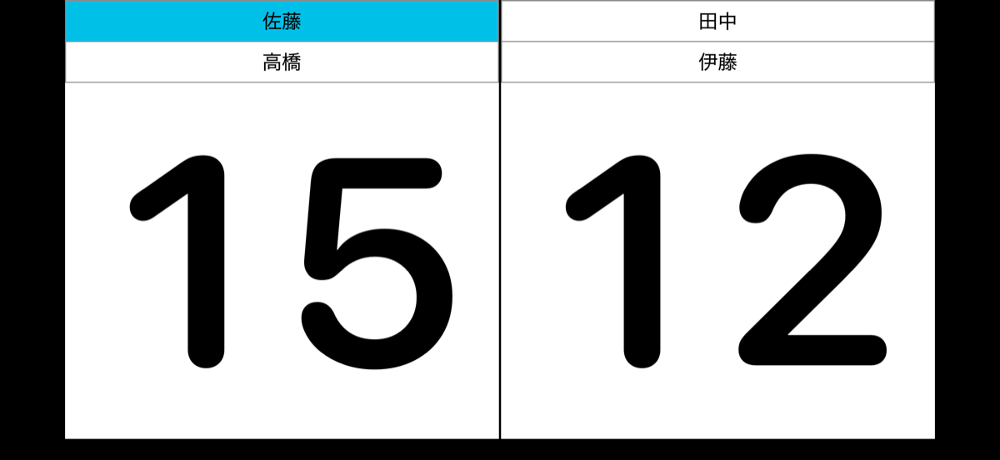
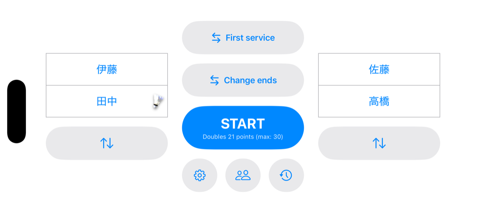

BadScoreバドミントン スコアボード — サポート
BadScore は、コートサイドの iPhone をスコアラーにするバドミントン用スコアボードアプリです。ポイントごとにスコアを読み上げ、ダブルタップでサーバーとレシーバーもコールします。


スコアボードの操作方法
| 上にスワイプ | そのサイドに加点(ページがめくれます) |
|---|---|
| 下にスワイプ | 直前のポイントを取り消し(直前に得点したサイドのパネルで) |
| ダブルタップ | スコアの読み上げ。ダブルスではサーバーとレシーバーの名前もコール |
| ピンチイン | 試合を中断してスタート画面へ(確認ダイアログが出ます) |
| 長押し | この操作ガイドを画面に表示 |
よくある質問
- Q. 音声が読み上げられない
- A. 設定画面(歯車)の Mute がオフになっているか、端末の音量をご確認ください。マナーモード中でも読み上げは再生される設計です。
- Q. プレイヤー名が読み上げられない
- A. 名前のコールはダブルスでのダブルタップ時のみ行われます(シングルスはサーバーが明確なため、スコアのみ読み上げます)。設定画面の「Announce player names」がオンになっているかもご確認ください。
- Q. 名前の読み方(発音)がおかしい
- A. プレイヤー編集画面の「Voice name」に、ひらがな等で読み方を入力してください。読み上げと一覧の並び順の両方に使われます。
- Q. 読み上げの声を変えたい
- A. 設定画面の Voice で Female / Male を切り替えられます。隣のコートで同じアプリが使われているときの聞き分けにも便利です。
- Q. もっと自然な声で読み上げてほしい
- A. iOS の仕様上、アプリが利用できる音声は iOS がアプリ向けに公開しているものに限られ、Siri の声や一部の高品質音声(日本語の Otoya など)は、iOS の設定画面でダウンロードできてもアプリからは利用できません。このため、日本語の読み上げは現在 Female が Kyoko、Male が Eddy(いずれも端末同梱)となり、iOS 設定の変更でこれを変えることはできません。音声を個別に選ぶ機能はなく、アプリが利用可能な音声から自動選択します。日本語以外の言語で、プレイヤー編集画面に「選択した性別の音声が未インストール」の警告が表示される場合に限り、iOS の「設定 > アクセシビリティ > 読み上げ > 声」からその言語の標準音声をダウンロードすると反映されます。
- Q. 同じ名前のプレイヤーが登録できない
- A. プレイヤー名はアプリ内で一意です。同姓同名のメンバーは、ニックネームや番号付きなど区別できる名前で登録してください。
- Q. 試合履歴を書き出したい
- A. 履歴画面右上の共有ボタンから、全履歴を CSV ファイルとして書き出せます(Excel などで開けます)。
お問い合わせ
不具合のご報告やご要望は、X (Twitter) @moriyant までお寄せください。
プライバシーポリシー
BadScore は、ユーザーの個人情報およびいかなるデータも収集しません。
- 登録したプレイヤー名や試合履歴などのデータは、すべてお使いの端末内にのみ保存されます
- アプリが外部にデータを送信することはありません(アプリはオフラインで動作します)
- 広告や解析(トラッキング)の仕組みを含みません
- CSV エクスポートや共有は、ユーザー自身の操作によってのみ行われます
制定日: 2026年7月13日